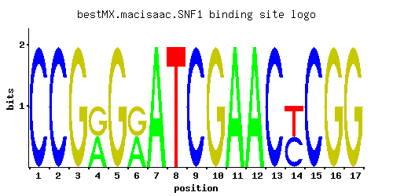

SNF1
YDR477W, PAS14, HAF3, GLC2, CCR1, CAT1
AMP-activated serine/threonine protein kinase found in a complex containing Snf4p and members of the Sip1p/Sip2p/Gal83p family; required for transcription of glucose-repressed genes, thermotolerance, sporulation, and peroxisome biogenesis
Best-performing DNA-binding model.

View and copy the recommended matrices ↘
A | 0.001 0.001 0.001 0.499 0.001 0.499 0.997 0.001 0.001 0.001 0.997 0.997 0.001 0.001 0.001 0.001 0.001 C | 0.997 0.997 0.001 0.001 0.001 0.001 0.001 0.001 0.997 0.001 0.001 0.001 0.997 0.499 0.997 0.001 0.001 G | 0.001 0.001 0.997 0.499 0.997 0.499 0.001 0.001 0.001 0.997 0.001 0.001 0.001 0.001 0.001 0.997 0.997 T | 0.001 0.001 0.001 0.001 0.001 0.001 0.001 0.997 0.001 0.001 0.001 0.001 0.001 0.499 0.001 0.001 0.001
A | 0 0 0 49 0 49 99 0 0 0 99 99 0 0 0 0 0 C | 99 99 0 0 0 0 0 0 99 0 0 0 99 49 99 0 0 G | 0 0 99 49 99 49 0 0 0 99 0 0 0 0 0 99 99 T | 0 0 0 0 0 0 0 99 0 0 0 0 0 49 0 0 0
A | -5.77 -5.77 -5.77 0.44 -5.77 0.44 1.14 -5.77 -5.77 -5.77 1.14 1.14 -5.77 -5.77 -5.77 -5.77 -5.77 C | 1.71 1.71 -5.19 -5.19 -5.19 -5.19 -5.19 -5.19 1.71 -5.19 -5.19 -5.19 1.71 1.02 1.71 -5.19 -5.19 G | -5.19 -5.19 1.71 1.02 1.71 1.02 -5.19 -5.19 -5.19 1.71 -5.19 -5.19 -5.19 -5.19 -5.19 1.71 1.71 T | -5.77 -5.77 -5.77 -5.77 -5.77 -5.77 -5.77 1.14 -5.77 -5.77 -5.77 -5.77 -5.77 0.44 -5.77 -5.77 -5.77
Alternative candidate matrices 1
Historical matrix candidates from the original ScerTF database. Expand a source to inspect its original logo, scores, and matrix values.
SNF1Foat et. al.P = 1View matrix ↘
Gene-level annotations and interactions.
Genes bound in ChIP-chip experiments 22 genes
YAR050W, YBR026C, YBR027C, YCL054W, YDR282C, YDR356W, YGR074W, YGR100W, YHR109W, YIL010W, YJR041C, YJR042W, YMR134W, YMR225C, YNL324W, YNL326C, YOR022C, YPL123C, YPR091C, YPR169W, YPR200C, YPR201W
Genes affected by TF deletion 132 genes
YJR048W, YLR246W, YNL052W, YBR219C, YKL043W, YLR058C, YOR065W, YFR033C, YMR189W, YPL016W, YDR342C, YHR051W, YJR112W, YLL030C, YMR103C, YMR107W, YNL111C, YOR317W, YAR064W, YAR068W, YGL077C, YML027W, YNR028W, YBR129C, YLL061W, YMR070W, YMR104C, YNL144C, YNL116W, YGR243W, YJL146W, YLR183C, YNL300W, YIL124W, YNL024C, YKL053C-A, YLR038C, YMR173W, YPL057C, YER152C, YJR025C, YMR023C, YNL090W, YOR230W, YOR202W, YJR148W, YDL132W, YDR343C, YOL082W, YOR353C, YOR357C, YOR298W, YPL278C, YDL198C, YHR214W, YNL309W, YNR035C, YFL021W, YHR094C, YIR010W, YMR083W, YMR144W, YNL156C, YPL137C, YBR296C, YHR214W-A, YLR133W, YIL094C, YNL099C, YOL002C, YDR345C, YIL114C, YBR177C, YGL055W, YNL289W, YLR260W, YLR290C, YLR294C, YPL253C, YMR173W-A, YDL048C, YGR019W, YGR049W, YMR120C, YOL156W, YOR367W, YPR068C, YJL167W, YMR274C, YNR041C, YBR139W, YDR174W, YDR477W, YHR096C, YIR016W, YJL003W, YLR355C, YOL119C, YBR298C, YNR042W, YPL163C, YCR067C, YHR018C, YIL172C, YLR297W, YMR002W, YOR245C, YGR176W, YMR182C, YPR159W, YGL259W, YKR066C, YKR098C, YMR062C, YGR177C, YKL067W, YLR079W, YLR049C, YLR081W, YMR181C, YDR122W, YLR360W, YMR276W, YPL134C, YBR151W, YFR025C, YGR086C, YKL007W, YOL101C, YIL010W, YIL041W, YML048W
Genes supported by both experiments 1 genes
YIL010W